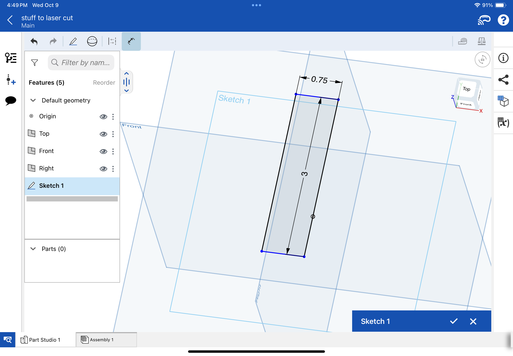
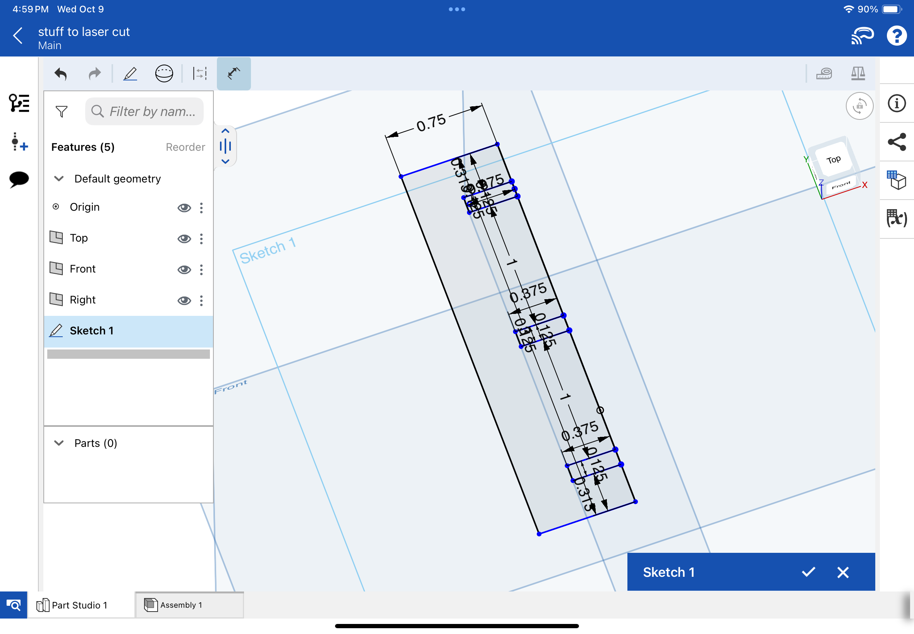
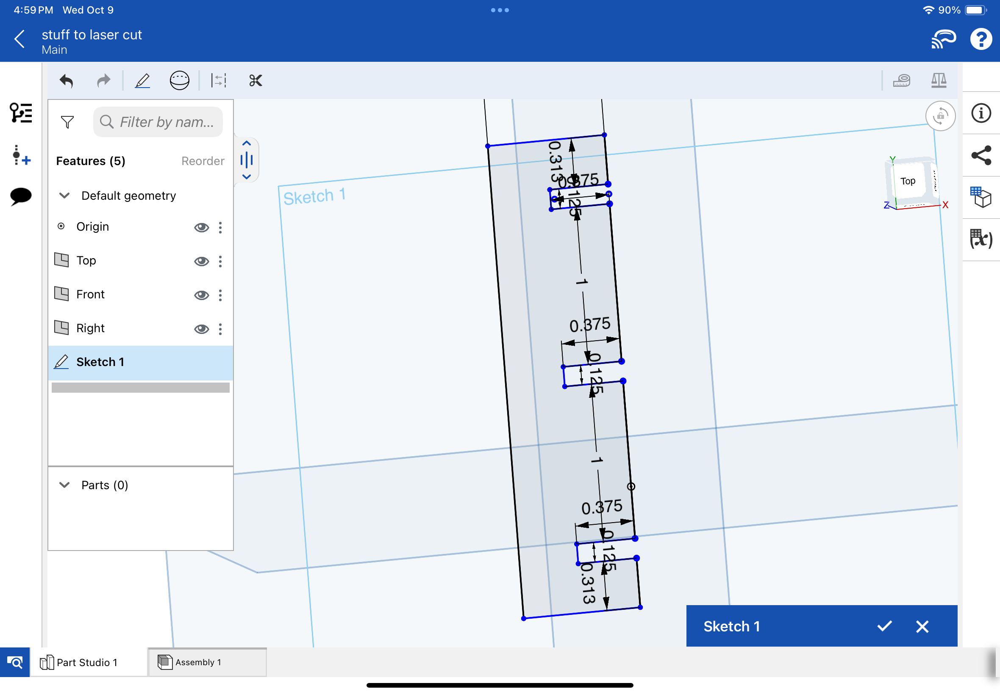
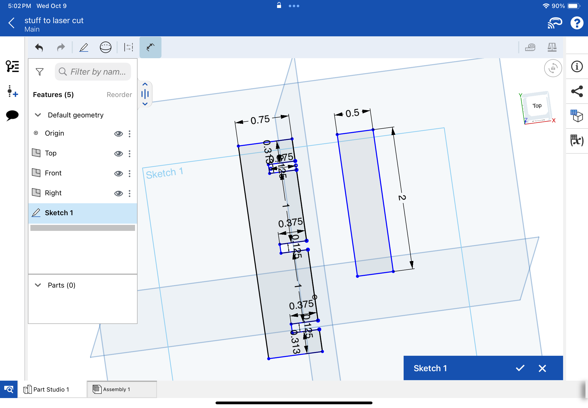
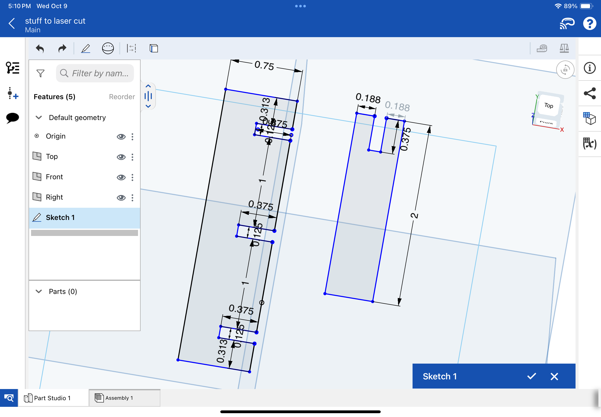
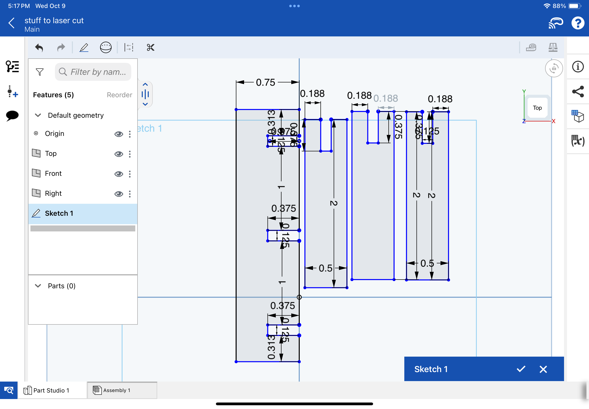
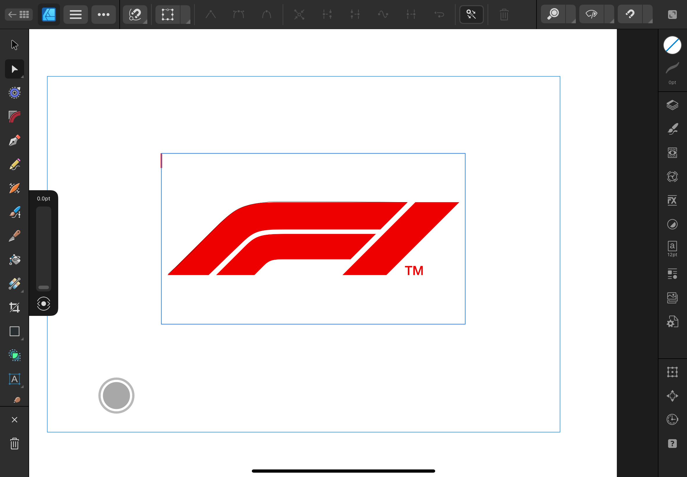
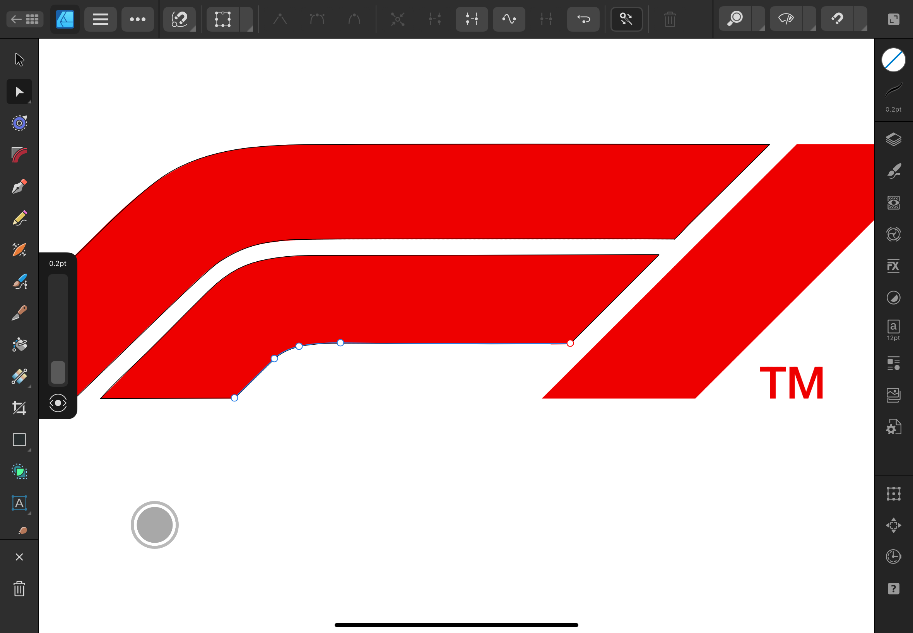
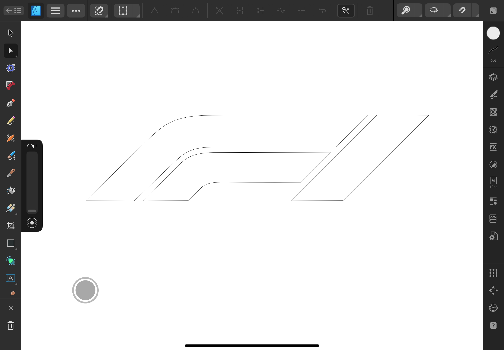

Wood Cutting Design
One side project that we had in class was making a woodcut puzzle with multiple pieces that fit together and form something. I decided to make mine a capital letter E, as it is the first letter of my name. I used Onshape to make it, as this project requires precision in measurements, and Onshape is the best for that. On the right are scrollable images that show the steps used to make it.

The first step was to create a rectangle and set it to the correct dimensions for the main part of the E.

Next, small internal rectangles are drawn inside it to make slots for the other ectangles to fit into.

Then, rectangles are cut out of the shape to give space for the side pieces to connect.

Another rectangle is created to be one of the side pieces of the E. It is made at a smaller size than the main part to make the letter look better

This rectangle then has a slot made in it so it can connect to the main part.

Then, this rectangle is copied two other times to form the other two branches of the E. Now it is ready to be cut.
Vinyl Cutting Design
The other half of this project is to make a design that can be cut from vinyl to be used as a sticker. I chose to make a Formula One logo for this, as I am a big racing fan. I used Affinity Designer to make a version that could be cut, as I now have experience with the program

First, I need to find an image to trace for the cut. Since I want to make a F1 logo, I found this image to use as a model.

Then, I create a new project in Affinity Designer, import the image into the program, and center it so I can begin copying.

I begin to trace the lines using the pen tool to form an outline of the logo. For the curved lines, I create multiple nodes so the curve looks smooth and conforms to the original logo.

Finally, I delete the image of the logo, leaving behind the trace I made of it. This is now ready to cut too!